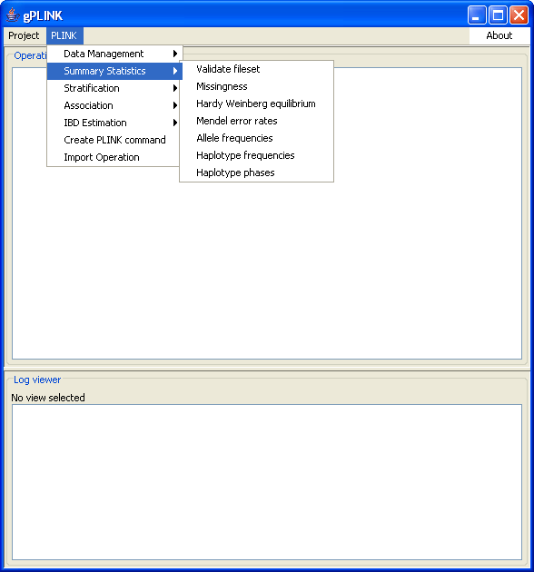

|  |
Our first gPLINK commandNow we have finished configuration, we are finally ready to start looking at the data. In this case, the remote project contains a binary fileset called example (i.e. the PLINK data files example.bed, example.bim and example.fam already exist in the remote folder). We could equally use gPLINK with standard text PED and MAP files also. We will use the Validate filset option from the Summary statistics menu to obtain basic counts of individuals and SNPs (this is equivalent to running PLINK with no command line options other than --bfilePrevious | Next |